PROFESSIONAL · INVOLING AB · 2025
WanderHon
A mobile travel experience that uses an AI character to reveal playful facts about places around you. I worked across the product from early research and structure to tested high-fidelity design and developer handoff.
01 · UNDERSTANDING THE PRODUCT
Turning location discovery into something playful and easy to explore.
WanderHon was designed around a simple idea: instead of searching for information about a place, users could discover nearby stories and facts through Hon, an AI character. My work began by understanding comparable interaction patterns and defining how the experience should move from onboarding into discovery, saving and returning to places.
Research and structure
I reviewed products including Google Lens, Pokémon GO and Duolingo, mapped the user journey and created the product sitemap. The structure covered onboarding, authentication, Home, Magic Map, Saved Trips and Profile, followed by user flows and mid-fidelity wireframes.
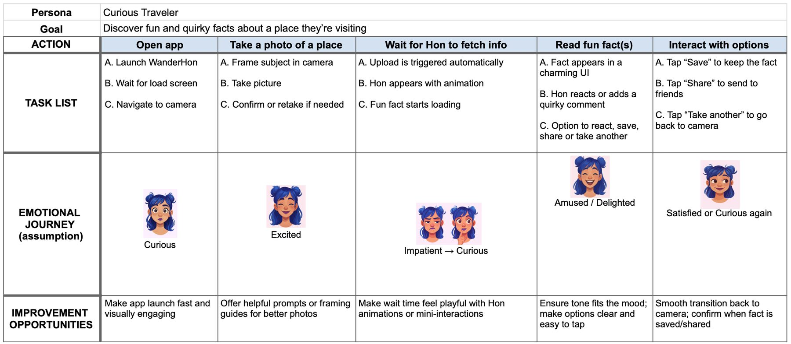
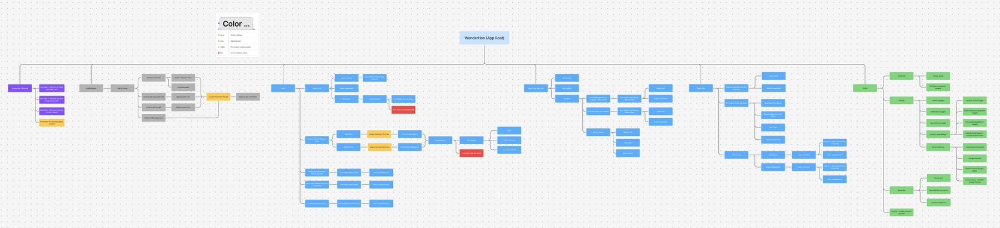
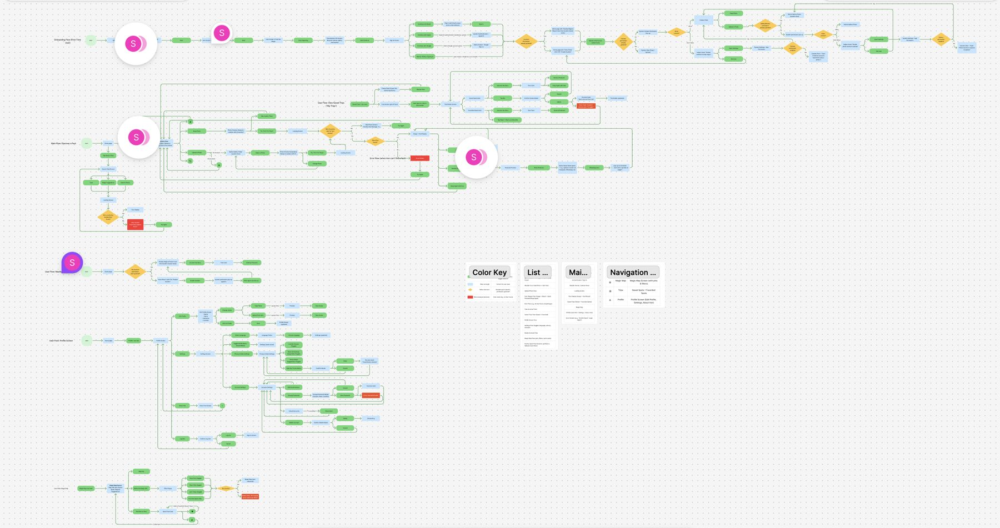
Make nearby content easy to notice without overwhelming the map.
Support natural movement between places, stories and recommendations.
Give users clear ways to save places and return to previous discoveries.
02 · PROTOTYPING & TESTING
Testing interaction before development made the product clearer.
I used prototypes throughout the project to test navigation and interaction rather than treating them only as presentation artifacts. The first usability round used a mid-fidelity Maze prototype. A second round tested the high-fidelity experience in Maze together with a moderated session.
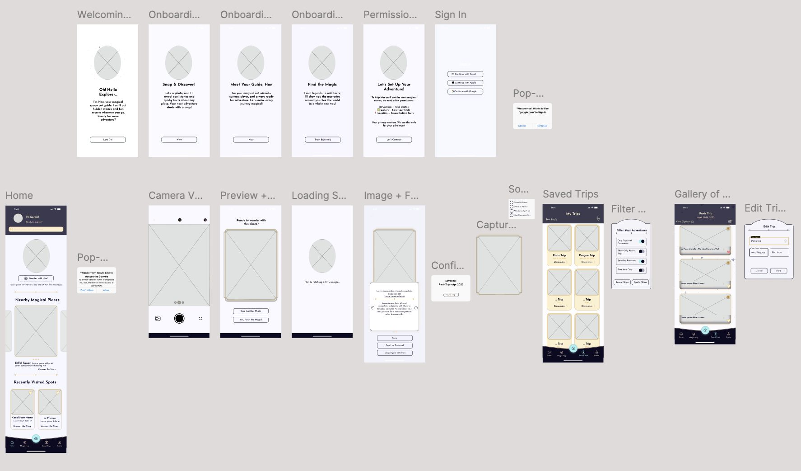
Participants expected to swipe between content, so swipe interaction was added to make exploration feel more natural.
Overlays were obscuring points of interest, so the interaction was changed to keep the map more usable.
The onboarding felt too long. A skip option was introduced to reduce friction.
The second test showed that confirmation after saving was unclear, leading to stronger feedback.
Dense text was broken into shorter sections to make information easier to consume.
Tooltips were introduced where users needed additional explanation without adding permanent interface clutter.
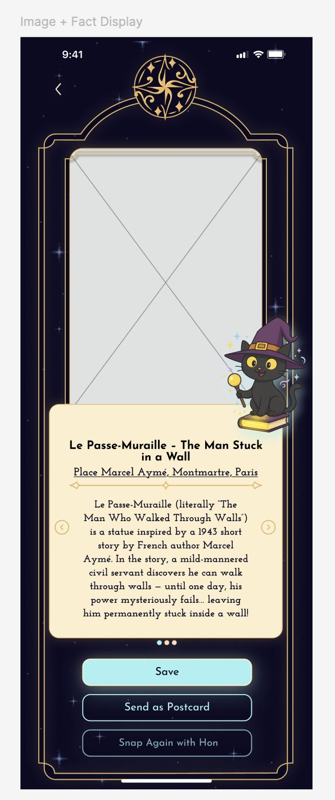
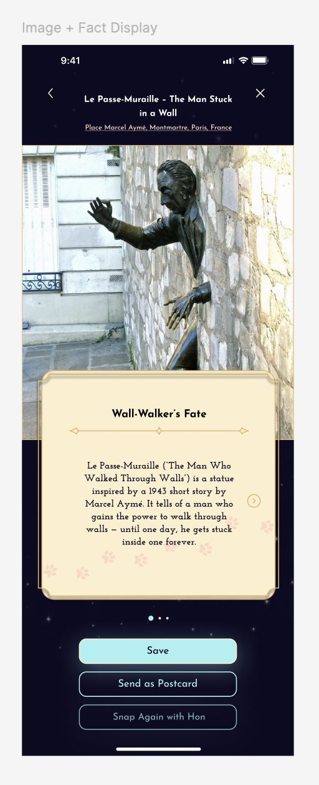
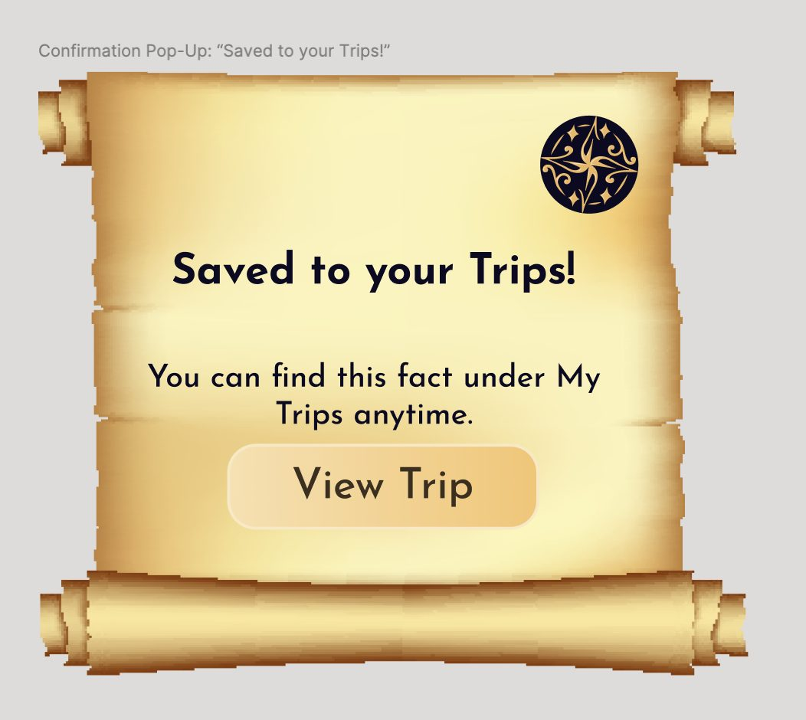
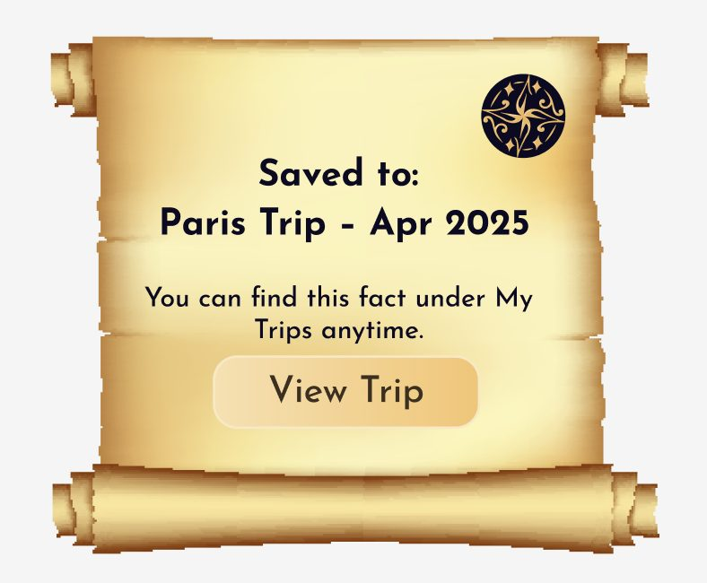
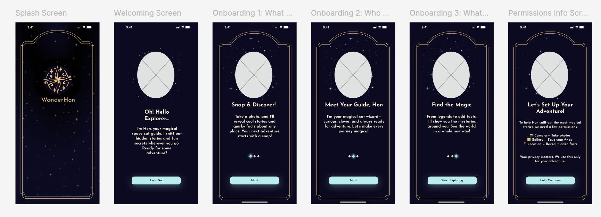
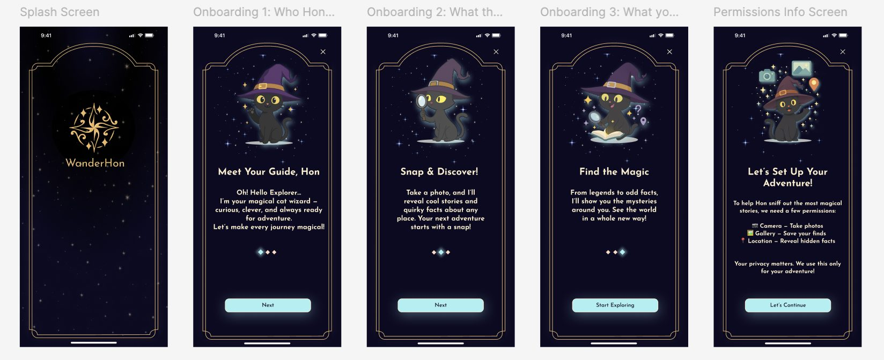
03 · DESIGN SYSTEM
Building reusable patterns alongside the product.
I created a Figma design system covering color, typography, spacing and elevation, then developed reusable components for buttons, cards and postcards, carousels, tooltips, modals and navigation. Patterns also covered onboarding, permissions and saving behavior.
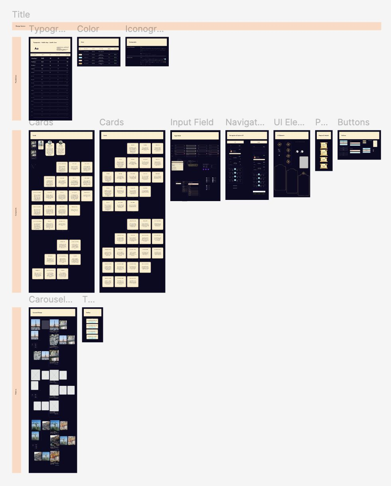
Accessibility
Accessibility was considered as part of the visual system. The interface met WCAG AAA contrast requirements and included support for larger text options.
04 · HANDOFF & CONTINUATION
From prototype to implementation.
I worked closely with the developer as the product moved toward implementation, organizing the Figma file and assets for handoff and resolving design details that appeared during development. This included asset organization, a loading spinner fix and iteration on the loading screen.
The project gave me end-to-end experience across research, product structure, interaction design, usability testing, visual systems and developer collaboration. The strongest lesson was how quickly a prototype can expose assumptions that look reasonable on a static screen but feel wrong when someone actually uses the flow.